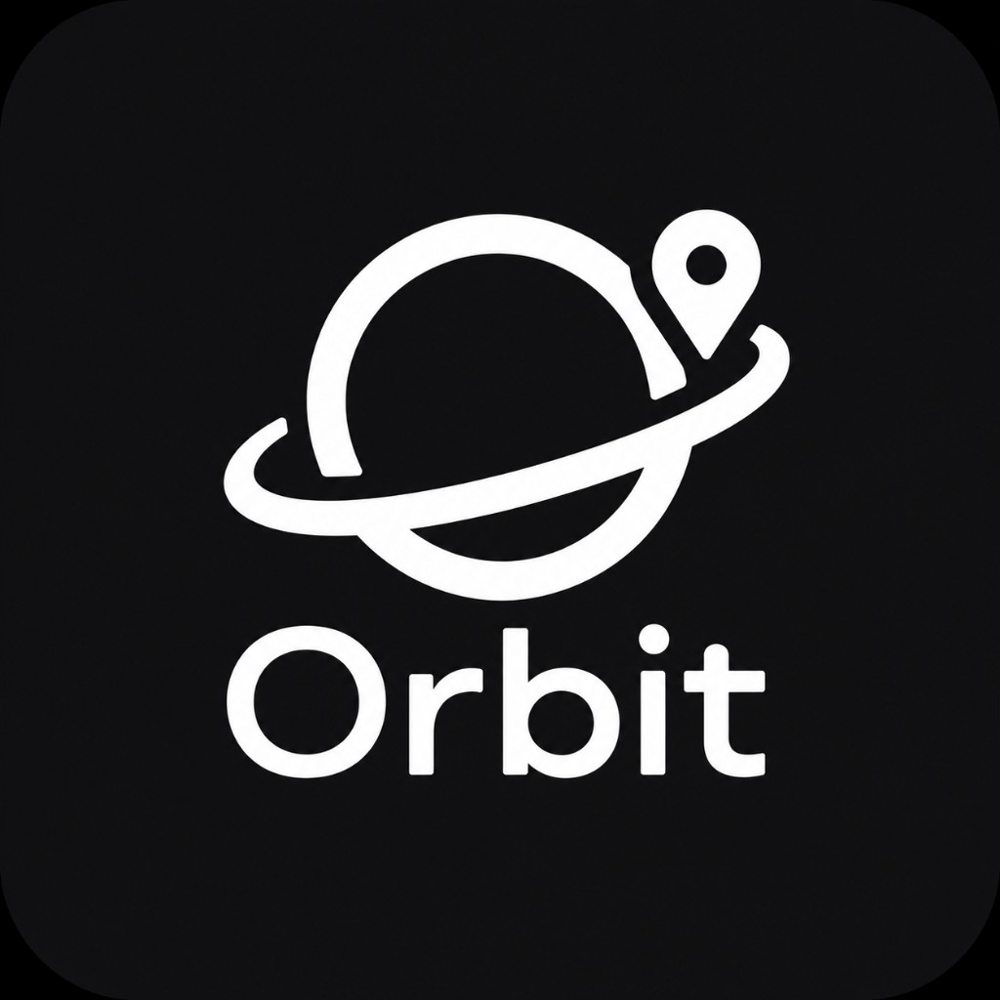

Map and review apps show too much undifferentiated choice. Travelers and locals struggle to find interesting, context-rich points of interest in real time, often missing hidden gems while endlessly scrolling through generic lists.
Orbit helps you explore a city on your own terms. By combining a map pin with a short taste profile, it curates a small set of places you might actually visit—each with a clear "why you" explanation.
Unlike static map apps, Orbit adapts to your location and interests to proactively surface relevant places and provides a conversational, context-aware audio tour guide experience as you explore.
Grab the demo device on the table to drop a pin and set your mood, or scan the QR code to try Orbit on your own iOS device via TestFlight.